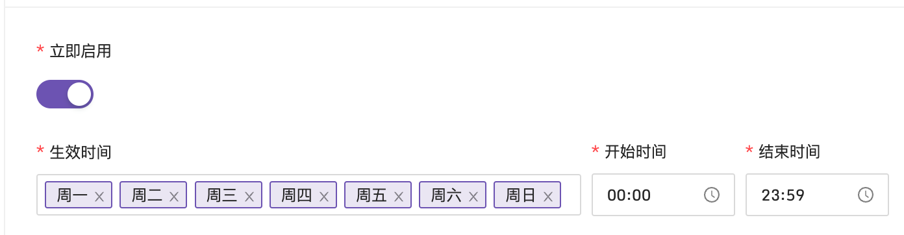
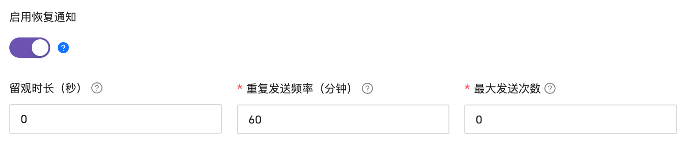

事件管理
事件降噪的几个典型手段
几乎所有的监控系统都具备生成告警事件的能力，但通常都不具有完备的事件后续处理能力。这里说的后续处理主要包括：多渠道分级通知、告警静默、抑制、收敛聚合、降噪、排班、认领升级、协同闭环处理等等。监控系统或多或少都有一些这方面的能力，但是通常都不完备，而这，正是 PagerDuty 这种产品存在的价值。
在事件处理方面，一般我们会遇到两个痛点，一个是告警事件太多，被过度打扰，另一个是重要告警疏漏，无法闭环处理。这个部分我会用两讲内容来介绍这两个痛点的解法。下面我们先来聊一聊告警事件太多的问题，看看通常是什么原因导致的。
告警太多的常见原因
最常见的原因，是 **告警规则设置得不合理**。比如很多规则触发了告警之后，实际没有后续动作，只是起到常态化通知的效果，不需要排查，也不需要止损，甚至连个长线的TODO都没有。这类告警多了人就疲了，当重要的告警来临的时候，也容易忽略。这样的规则如果不经过治理，日积月累，就会产生很多无用的告警。
第二个常见的原因是底层出问题导致所有的上层依赖都告，越是底层影响越大，比如基础网络如果出问题，发出几万条告警都是正常的。
第三个原因是渠道错配。一些不重要的告警也使用打扰性很高的渠道发出，用户可能会觉得单一渠道不可靠，想用多个渠道同时发送的方式来保障告警触达率，这也属于告警规则配置不合理的范畴。
第四个原因是 预期内的维护动作 导致的。比如程序升级变更，如果进程重启时间过长，可能会导致关联的服务告警，或者某个机器重启，忘记提前屏蔽了，也会产生一堆关联告警。
了解了常见原因，下面我们来看一下有哪些常见解法。
优化告警规则
类似 PagerDuty 这样的告警事件中心的产品，一定程度上是可以解决一些告警过多的问题，但如果能从告警规则的源头做好优化，自然是事半功倍。很多公司的告警规则配置没有原则可循，每次故障复盘先看告警是否漏报，一线工程师为了不背锅，自然是尽量多地提高告警覆盖面，但这么做的后果，就是告警过多，无效告警占多数，长此以往，工程师疲惫不堪。
那么告警规则的配置应该遵照一个什么原则呢？虽然每个公司业务不同，总有一些通用的原则可循吧？的确如此，这里我分享一下我个人的做法，希望对你有所启发。
每个规则都应该对应具体的 Runbook
Runbook 就是告警处理手册，也就是告警触发之后，应该细化排查哪些方面，按照一个什么方式执行动作，应该有一个手册参考。如果告警发生之后没有后续动作，那这个告警的意义就不大了。在Nightingale 的告警规则配置页面，可以看到一个专门的 Runbook 配置，Grafana 的告警配置页面，也有一个 Runbook 的选项，就能看出他们对它的重视程度。
这个原则看起来是不是很合理？但是真要落地的时候，又会发现紧急需要处理的告警事件通常容易对应 Runbook，但是有些告警规则产生的告警确实没有那么紧急，有些只是想作为一个通知，好像又确实难以对应一个固定的 Runbook。
针对这两种情况，我的做法是：不紧急的告警，也必须要有动作，虽然这个动作可能不是立马执行处理，但至少要创建个低优先级的工单之类的，或者提高告警阈值，等问题严重一些再告警。对于只是想通知一下的告警，其实都不算告警，只能看做是一种另类的报表和巡检手段，这样的“告警”就按照报表和巡检的逻辑来处理，比如把这类“告警”发到一个单独的邮件组或者单独的聊天群组，平时都不用关注，只要每天早上上班或晚上下班之前稍微看一眼就行，这样就可以减少打扰。
制定了这个原则之后，如果大家不遵守怎么办呢？还是有很多告警没有对应的 Runbook，作为管理人员，我们应该怎么处理？我的建议是分产品线统计一个指标：“Runbook预置率”，就是各个产品线有多少告警规则配置了 Runbook，有多少没有配置，这个比例要统计出来，然后做成红黑榜，让大家去治理，治理一段时间之后有经验了，知道预置率大概在一个什么范围是合理的，然后就可以要求大家至少达到预置率下限的值。否则，就一定是有问题的。
Runbook 这个配置原则，是我最为推荐的原则，效果非常明显，其次就是告警分级原则。
每个告警都应该合理分级
基本每个监控系统都支持为告警规则配置不同的级别，基本上每个监控系统的用户也都知道应该做分级告警。但是具体怎么分级，却没有一个行业共识，大家各做各的。这里我也分享一下我的理解，你可以参考借鉴。
首先，不同级别的告警应该对应不同的处理逻辑，这样分级才有意义，比如通知渠道不同，通知范围不同，或者介入处理的人的范围不同，处理时效不同 ，如果某两个级别对应完全一样的处理逻辑，就可以合并成一个级别。
我的做法是把告警分成 3 个级别。
| 级别 | 通知渠道 | 说明 |
|---|---|---|
| Critical | 电话、短信、即时信息、邮件 | 影响收入的、影响客户的、必须立刻处理 |
| Warning | 短信、即时消息、邮件 | 无需立刻处理，但如果不处理，时间久了就会演化为 Critical 的问题，可以先放入 TODO 列表，手头上的紧急事务搞定之后就去处理 |
| Info | 邮件 | 每天下班前稍微看一眼，偶尔一两天忘了看也无伤大雅 |
另外，如果 Critical 的告警规则很多，大概率也有问题，说明系统架构不够鲁棒，出点什么事都要立刻介入，系统没有自愈能力。这样的系统，需要配备更多运维人员，而且还很难跟老板讲清楚价值。怎么办？这就需要制定运维准入规则，哪个系统要交给运维人员来运维，首先要提供一些信息。
- 相关联系人，出了问题能够及时找到人，联系不上的话得能直接联系研发领导。
- 服务相关信息，比如代码仓库、系统架构、依赖哪些服务、依赖哪些系统参数、哪些 JVM 参数、常见问题还有处理办法等等。
然后进行准入评审，如果系统架构有明显问题，就没办法通过准入要求，不接受运维，如果老板要求必须接，那就只能加人了，或者明确说明在架构调整好之前，不负责 SLA。如果老板不接受沟通，那就跳槽吧，老板根本不懂运维、不懂稳定性还不信任你。
上面介绍的两个告警规则优化原则，是最重要的两个原则。照做的话，可以搞定大部分无效告警，下面我们再从告警产品的角度来看，有哪些手段可以解决告警太多的问题。
告警规则支持生效时间的配置
不同公司的业务相差很大，比如券商，交易时间段内需要高优保障稳定性，但是非交易时段，有些进程直接停掉也无所谓。但如果是监控系统，数据是时时刻刻都在上报的，没有高峰低谷，需要时刻保证高可用。你可以看下典型的生效时间配置，可以配置一周当中哪些天生效、哪些时间段生效。当然，整体是否启用的开关也必不可少。

图片中的配置其实可以继续优化，现在是只能配置一个时间段，如果能够配置多个时间段就更好了。
告警规则支持分级和不同的触达渠道
有的系统会把触达渠道和告警级别强绑定，用户只需要选择级别，就自动使用对应的通知媒介，有的系统会把二者拆开，我个人对这个没有倾向性，Open-Falcon 是绑定的，Nightingale 是分别配置的，分别配置的方式会相对灵活一点。
一些低优先级的告警就用打扰性低的通知媒介来通知，比如邮件，不要什么都打电话发短信，如果某个通知渠道经常用来通知一些低优先级的告警，时间久了这个通知媒介发出的告警就不被重视了。
重复告警支持最大次数和发送频率
有些告警短时间没法恢复，可能会重复发送。比如一分钟检查一下某个指标，如果超过阈值就告警，从某个时刻开始，触发了阈值，一分钟之后发出第一条告警，但是短时间没有恢复，持续了10分钟，监控系统在第二分钟检查的时候发现还是告警状态，可能还会发出一条告警，但是这个告警的重要性就远不如第一条，完全可以不用通知。通过设置发送频率，可以做到比如1小时之后再检查，如果1小时之后还是没有恢复，再发出第二条告警，这样告警数量就大幅减少了。当然，如果好几天没有恢复，也没有必要每个小时发一次，应该支持最大发送次数，限制一下未恢复之前的通知总次数。比如 Nightingale 对这两项的配置。

你看图片里还有一个启用恢复通知和留观时长，这里我也解释一下，这也是减少通知次数的典型手段。告警之后一般会发一条“Triggered”的消息，如果恢复了，有些用户也希望得到通知，这个时候会收到一条“Resolved”消息。但是重要的告警只要收到了，一般我们就会立马到平台上去排查，既然用户已经登录平台了，告警是否恢复其实已经可以在平台上看到了，不用再通知，所以有些用户就把“启用恢复通知”给关闭了，这种方式也可以减少消息通知次数。
留观时长有点儿像是去看病，告警了就相当于得病了，比如高烧 39 度，触发了告警，这个时候我们像医生一样进行一系列诊断和修复的动作，发现体温退到 37 度，这个时候应该出院吗？有的时候是不行的，需要观察一段时间，一段时间内没有再次高烧再出院，这就是留观时长的设计逻辑。
告警事件支持屏蔽配置
告警屏蔽我们比较熟悉了，一般就是在做一个预期的维护动作之前，提前把相关告警屏蔽掉，免得在维护期间又收到告警。
告警屏蔽一般有两种配置方式，一个是配置成未来的一个时间段，一个是配置成周期性时间段。未来的一个时间段，就是用来应对刚才介绍的预期内维护行为的，周期性时间段比较特殊，比如每天凌晨 1 点到 5 点不需要告警，或者周末不需要告警，就可以配置成周期性屏蔽规则。
告警事件支持抑制配置
告警抑制的典型使用场景是一个指标配置两条策略，不同的优先级和阈值，如果高优先级的告警触发了，低优先级的告警就被抑制，不再重复发送了。
比如磁盘使用率大于 88% 就发一个 Warning 级别的告警，大于 99% 则发一个 Critical 级别的告警，现在磁盘使用率在 85%，突然一下子写到了 99.1%，理论上这个时候两个告警都会触发，但是我们只希望收到 Critical 级别的告警。这就需要告警抑制规则的支持了。
有些监控用户会表达这种需求：某个核心数据库告警了，依赖这个核心数据库的告警都会发出来，希望这个场景也做个抑制，只收到数据库那条告警，上游服务告警就不要再发出来了。这个需求合理吗？
我觉得有待商榷。所有的上游服务都发出告警，虽然告警消息变多了，但是可以通过聚合发送的方式减少打扰，众多服务告警，也正好可以让我们知道影响范围。另外，服务之间的依赖关系错综复杂，依赖这个数据库的服务出了问题，确实可能是数据库导致的，但也可能是其他依赖导致的，如果这个时候通过抑制规则只发出数据库告警，可能就会忽略一些问题。
告警事件聚合发送逻辑
事件降噪发送最有效的技术手段，其实就是聚合发送，能够起到立竿见影的效果。用户的告警规则配置得太乱，系统是没办法左右的，但是短时间触发很多告警，系统是可以通过技术手段聚合之后再发送的。
事件聚合一般是根据两三个维度的信息进行聚合运算，比如告警接收者的维度、时间的维度、指定的某个标签的维度（比如产品线），也可能不指定聚合标签，只使用接收者维度和时间维度，这样聚合率会更高。什么意思呢，我举个例子。
张三同学，在一分钟内，收到 10 条 Kafka 告警，10 条 Elasticsearch告警。如果只按照接收者维度和时间维度聚合，就可以把这 20 条告警聚合成 1 条通知张三，通知消息可能是这么写的。
张三您好，最近一分钟您有 20 条告警，最高级别是 Warning，相关告警举例：
10.2.3.4 Kafka 有目录 Offline
10.2.3.5 Kafka 有目录 Offline
10.2.3.6 ElasticSearch 流量过大
更多详细告警信息，请点击这里查看
如果把产品维度也加上，这 20 条告警就会聚合成 2 条，1 条报的是 Kafka，1 条报的是 Elasticsearch。所有聚合发送的事件中心大都是类似的逻辑，当然也可以根据文本相似性之类的做聚合。
另外，我们也可以增加更多维度来聚合。那怎么做才是最佳实践呢？
我分享一下个人看法：从告警聚合通知角度来看，只根据接收人和时间两个维度做聚合就够了，这样的聚合率最高，被打扰的次数最少。虽然会把多种告警消息混杂在一起通知给用户，显得有些混乱，但是用户一般也不会在短信、邮件、即时通信软件里期待分门别类的事件查看效果。想要更好的查看效果，可以去页面上看，页面上有更大的操作区，想怎么聚合就怎么聚合，想怎么看就怎么看。告警都已经发生了，大概率是要打开电脑处理的，都已经打开电脑了，在页面上查看一下也是顺其自然的。
针对告警事件太多的问题，主要就是上面这些解决办法。市面上的开源产品，只有 Prometheus 生态的 Alertmanager 做得相对完备一点，但是也不具备我上面说的所有的能力。主要是监控系统的重心，大都放到了数据采集、数据存储、告警触发引擎上面了，对于告警发送这块，关注相对比较少。而且，告警发送是个通用需求，Zabbix 需要、Prometheus 需要、Open-Falcon、Nightingale、各类云监控其实都需要，做一个统一的产品对接所有这些事件源，是个更合理的做法。
如何保证事件的闭环处理？
告警发出来得有人处理，所谓的闭环，就是指告警发出、认领、协作处理、问题恢复、复盘改进的整个过程。
虽然事件降噪的几个手段落实之后，事件数量确实变少了，但是处理告警事件显然不是一个让人愉快的事情，不愉快的事情就要团队共担，所以第一个手段就是排班，专人做专事。
排班，专人做专事
这个手段听起来并不高大上，但确实非常有效。值班期间虽然提心吊胆的，生怕背锅，但因为是轮班制，心里总有个盼头，挺过这个周期就好了。
轮班的人在值班期间是第一责任人，会拿出 120% 的精力来处理问题，责任到人显然更容易推进问题解决，其他不值班的人则可以心无旁骛地做一些长线的事情，不至于总是被告警打断。
排班系统通常不开源，通常是作为事件中心的一个功能，PagerDuty 就提供了排班能力，即使没有系统支持，也建议人为制定一个排班表，把这个制度落实下去，对告警闭环处理也会有很大帮助。
值班人员在值班期间，虽然已经高度重视了，但也难免疏漏，这就需要告警升级机制了。
告警升级机制
告警升级是指在第一责任人收到告警之后没有及时响应，然后系统自动通知二线、三线人员的一种机制。一线人员没有及时响应的原因可能有很多，比如手机静音了没有听到，晚上睡着了，或者临时出去有事忘带手机了等等。这个时候系统发现某个告警一直没有恢复，也没有被认领，一段时间之后，就应该通知值班人员的领导或者二线备份人员，如果二线人员也迟迟没有响应，就应该继续往上升级。
告警升级机制需要认领功能的配合，也就是一线人员收到告警之后要通过某种机制告诉系统：“我已知晓告警，现在我开始处理了，你不要升级了”。典型的认领功能一般是做在页面上的，告警后打开告警事件管理中心，选中相关告警一键认领，也可以通过上行短信或即时通讯工具中的上行回调机制来完成。
升级机制会给值班人员很大的压力，毕竟谁也不想稍不留神就把电话打到老板那里，所以一般只有严重的告警才会启用升级机制，警告或者通知性质的告警都不用启用升级机制。当然，这个规范怎么定，各个团队可以自行商定。
通过排班、认领、升级这些机制，可以确保告警递达指定的人，但要处理告警的话，只有值班人员自己就未必搞得定了，需要有协同机制把相关人都拉进来一起处理才可以。对于某个故障，可能同时有多个告警事件产生，大家基于一个统一的故障协同，而不是基于一堆事件分别协同，这就需要把这多个事件收敛成一个故障，下面我们来聊一下这个收敛逻辑。
告警收敛逻辑
一般收敛逻辑是三级收敛，event -> alert -> incident。举个例子，最原始的告警事件，比如 host1 在 timestamp1 产生了一条 cpu_usage_idle 的告警，我们称为一个 event。如果没有恢复，一段时间之后，比如 timestamp1 + 60min，一般会再发出一个告警，还是 host1，还是 cpu_usage_idle 这个指标。很明显，这两个告警事件是有关联关系的，指代的是一个问题，只是时间戳不同，这样的两个 event，就可以收敛为一个 alert。
从实现上来说，告警策略（也称告警规则）+ 指标标签集的哈希值，可以作为 alert 的唯一标识。比如刚才的例子，告警策略的 ID 假设为 32，标签集是：[“ name =cpu_usage_idle”, “host=host1”]，这两个时间戳产生的告警事件，哈希值都是一样的。
计算方法是：
hash(32 + ["__name__=cpu_usage_idle", "host=host1"])
从 event 到 alert 的这个收敛逻辑，我们叫做一级收敛。只有这个收敛逻辑还不够，告警信息还是比较散，不好基于这些散乱的告警分别做协同，把多个 alert 收敛成一个 incident（故障），基于 incident 做协同才比较方便。但是，event 到 alert 是有一个固定的收敛逻辑的，可以通过程序自动收敛，而 alert 到 incident 却很难自动收敛。不过业界也会有一些常见的做法，下面我举几个例子。
- 根据时间做收敛
把告警中心收到的所有告警，按照时间维度做收敛，比如按照分钟颗粒度，一分钟内所有告警收敛成一个故障，下一分钟所有告警收敛成另一个故障。显然，一个故障内的多个告警相互之间可能没有关联关系，所以这种收敛方法不是太好。
- 根据时间+标签做收敛
除了时间维度，再加上某个标签作为收敛维度，比如机器标签，某个时间段内所有 A 机器的告警收敛成一个故障，所有 B 机器的告警收敛成另一个故障。或者按照服务维度，某个时间段内所有 A 服务的告警收敛成一个故障，所有 B 服务的告警收敛成另一个故障。看起来效果好多了，不过还是没办法和现实中的告警和故障建立完美的对应关系。
- 根据时间+文本相似度做收敛
文本相似度需要引入算法，但是算法总得有个规律，我们很想把某个故障相关的告警聚拢到一起，但是显然，很难有个行之有效的规律，没有规律的算法效果自然好不到哪儿去。
既然没办法把告警自动收敛成故障，那就手工来做。一个故障关联的关键告警，还是相对容易区分的，只要把关键告警关联到故障，后续基于这个故障做协同就可以了。所谓协同，一个是信息同步、协同处理，一个是共同复盘、管理跟进项。
故障协同处理
首先，并不是所有的告警都需要升级成故障协同处理。一般来讲，如果告警可以被值班人员直接处理掉，对别的团队负责的服务没有影响，不需要通知别的团队，通常是不需要升级成故障的，在告警层面来协同就可以了，自己团队内部消化掉；如果值班人员和他所在的团队没办法独自处理告警，才需要升级成故障，拉其他团队的人进来一起处理。
多个团队共同处理一个故障，不同团队的人会发现一些不同的线索，需要及时同步给所有相关的人，这个时候就可以在故障下面添加评论，其他人就可以及时看到。等到止损之后，大家还要根据故障时间线复盘，产出一系列跟进项，这个时候就需要这个故障管理模块具备跟进项管理的功能，或者至少能够跟任务管理系统良好打通。
有了这样一个故障协同的机制之后，故障被处理掉的概率就大幅提升了，后续再配合一些运营统计手段，统计各个团队的平均故障止损时间，建立红黑榜，大家就会有更高的热情来处理故障。当然，人的热情再高，也不如机器来得快，如果有些告警能够直接关联自动化处理逻辑，无疑可以大大增加事件闭环率。
告警自动处理
很多监控系统都可以配置 Webhook，当告警触发之后自动回调某个 HTTP 接口，来串联一些自动化的逻辑，让告警事件无人值守自动处理。比如某个机房的某个服务挂掉了，Webhook 的逻辑是自动调用切流的接口，把服务流量切走，这样来达到止损的目的。
不过对于很多运维工程师来说，写一个 HTTP 接口还是有点儿麻烦，如果可以在告警之后直接调用一个脚本，在这个脚本里写自愈逻辑就好了。Nightingale 就可以这么干，配合 ibex 模块，可以在告警的时候自动去告警的机器上跑个脚本，比如磁盘满了自动跑个脚本清理一下无用的日志，只要在告警规则的回调地址里配置类似 ${ibex}/35 的信息就可以了。
${ibex}/35 就表示告警触发之后自动执行 ID 为 35 的自愈脚本，默认在告警的机器上执行。如果想到固定的机器上执行，比如去某个中控机上执行，只需要把机器标识信息拼接到 URL 后面，比如 ${ibex}/35/cloud-center01.bj。
新版本的 Categraf 已经内置了 ibex-agent，不用再单独安装任务执行的 agent 了，只要在服务端单独部署 ibex-server 模块，和 n9e-server 协同打通即可，非常简单。
另外，告警自动处理的这段逻辑，未必一定能够做到告警自愈，有的时候只是使用这个机制来抓现场，也是非常有价值的。比如某个进程挂掉了，在挂掉的时候我想知道当时机器的一些运行情况，比如各项资源的占用情况、系统日志的信息等等，我们就可以借助告警自动处理的这个方式，来自动跑个脚本抓取当时机器上的一些现场信息，相比收到告警之后手工登录机器查看要高效得多。